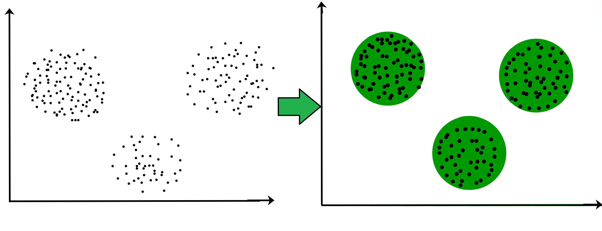

MACHINE LEARNING
What is machine learning?
machine learning is a tool for turning information into knowledge
it's anywhere!
Basic Concepts
-
Computer science
-
Artificial intelligence
-
Soft computing
-
Pattern recognition
-
Computational learning theory
Machine learning is a subfield of soft computing within computer science that evolved from study of pattern recognition and computational learning theory in artificial intelligence.
Problems, rules, answers
-
Traditionally: (data, rules) => answers
-
Machine learning: (data, answers) => rules
Machine learning approaches
supervised
unsupervised
semi-supervised
reinforcement learning
Machine learning process
Terminology
-
Dataset
-
Features
-
Model
Machine learning process
data collection => data preparation => training => evaluation => tuningOrigins
-
Ada Lovelace: anything in the world could be described with math
-
Probability theory
Probability theory
-
Each event in the world has uncertainty attached to it
-
Bayesian probability
-
Basing probabilities on the information about an event
-
Probabilities can be assigned to rare events
Approaches in Machine Learning
supervised
unsupervised
semi-supervised
reinforcement learning
-
No Free Lunch theorem: there is no single algorithm
Supervised learning
-
Rules between a set of inputs and outputs
-
Classification
-
Regression
Classification
|

|
Regression

Unsupervised learning
-
only input data is provided
density estimation
clustering
dimensionality reduction
latent variable models
anomaly detection
Clustering
-
creating groups with differing characteristics

Association
-
uncovers the rules that describe your data
-
related items
Anomaly Detection
-
identification of rare or unusual items
Dimensionality Reduction
-
find the most important features
Semi-supervised learning
-
mix between supervised and unsupervised approaches
Reinforcement Learning
-
more complex but more incredible
reward-motivated behavior